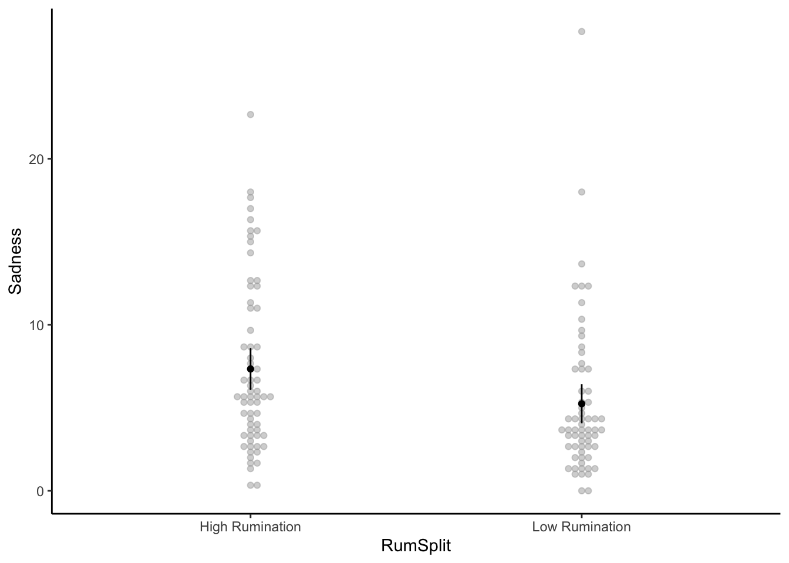
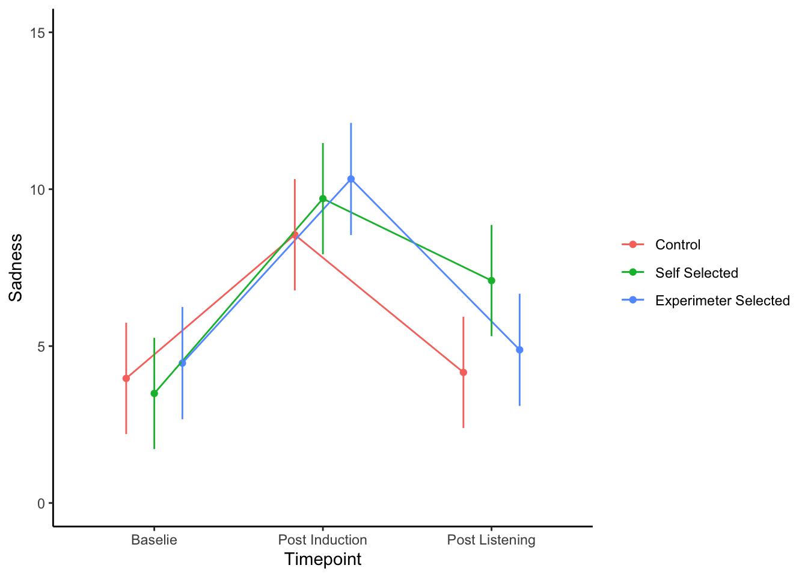

Last updated: 2019-09-26
Checks: 6 1
Knit directory: MusicEmoRegInRumination/
This reproducible R Markdown analysis was created with workflowr (version 1.4.0). The Checks tab describes the reproducibility checks that were applied when the results were created. The Past versions tab lists the development history.
The R Markdown file has unstaged changes. To know which version of the R Markdown file created these results, you’ll want to first commit it to the Git repo. If you’re still working on the analysis, you can ignore this warning. When you’re finished, you can run wflow_publish to commit the R Markdown file and build the HTML.
Great job! The global environment was empty. Objects defined in the global environment can affect the analysis in your R Markdown file in unknown ways. For reproduciblity it’s best to always run the code in an empty environment.
The command set.seed(20190920) was run prior to running the code in the R Markdown file. Setting a seed ensures that any results that rely on randomness, e.g. subsampling or permutations, are reproducible.
Great job! Recording the operating system, R version, and package versions is critical for reproducibility.
Nice! There were no cached chunks for this analysis, so you can be confident that you successfully produced the results during this run.
Great job! Using relative paths to the files within your workflowr project makes it easier to run your code on other machines.
Great! You are using Git for version control. Tracking code development and connecting the code version to the results is critical for reproducibility. The version displayed above was the version of the Git repository at the time these results were generated.
Note that you need to be careful to ensure that all relevant files for the analysis have been committed to Git prior to generating the results (you can use wflow_publish or wflow_git_commit). workflowr only checks the R Markdown file, but you know if there are other scripts or data files that it depends on. Below is the status of the Git repository when the results were generated:
Ignored files:
Ignored: .DS_Store
Ignored: .Rproj.user/
Unstaged changes:
Modified: analysis/StudyOneConfirm.Rmd
Modified: analysis/StudyOneExplore.Rmd
Modified: analysis/_site.yml
Note that any generated files, e.g. HTML, png, CSS, etc., are not included in this status report because it is ok for generated content to have uncommitted changes.
These are the previous versions of the R Markdown and HTML files. If you’ve configured a remote Git repository (see ?wflow_git_remote), click on the hyperlinks in the table below to view them.
| File | Version | Author | Date | Message |
|---|---|---|---|---|
| html | 1eec503 | Joel Larwood | 2019-09-25 | Build site. |
| html | d153258 | Joel Larwood | 2019-09-25 | Build site. |
| html | 2e25e9c | Joel Larwood | 2019-09-25 | Build site. |
| Rmd | dedd590 | Joel Larwood | 2019-09-25 | Publish to study 2 explore |
| Rmd | cd4829d | Joel Larwood | 2019-09-23 | build control model |
| html | cd4829d | Joel Larwood | 2019-09-23 | build control model |
s1raw <- read_csv("data/s1.csv")
names(s1raw) [1] "id" "MusicAccess" "MusicAccessNo"
[4] "Age" "Gender" "Ethnicity"
[7] "Nationality" "Sample" "MARS1_1"
[10] "MARS2_1" "MARS3_1" "MARS4_1"
[13] "MARS5_1" "MARS6_1" "MARS7_1"
[16] "MARS8_1" "MARS9_1" "MARS10_1"
[19] "MARS11_1" "MARS12_1" "MARS13_1"
[22] "MARS14_1" "MARS15_1" "POMSDSF1_1"
[25] "POMSDSF2_1" "POMSDSF3_1" "POMSDSF4_1"
[28] "POMSDSF5_1" "POMSDSF6_1" "POMSDSF7_1"
[31] "POMSDSF8_1" "Sadness_MIP" "MIP_timing_3"
[34] "POMSDSF1_2" "POMSDSF2_2" "POMSDSF3_2"
[37] "POMSDSF4_2" "POMSDSF5_2" "POMSDSF6_2"
[40] "POMSDSF7_2" "POMSDSF8_2" "Condition"
[43] "Cond_Control" "Control_timing_3" "Cond_Chet"
[46] "Chet_timing_3" "Cond_SelfSelected" "Cond_SS_Instructions"
[49] "Cond_SS_Timer_3" "SelfSelected_Song1" "SelfSelected_Song2"
[52] "track_name" "artist_name" "album_name"
[55] "track_popularity" "danceability" "energy"
[58] "key" "loudness" "mode"
[61] "speechiness" "acousticness" "instrumentalness"
[64] "liveness" "valence" "tempo"
[67] "duration_ms" "time_signature" "key_mode"
[70] "POMSDSF1_3" "POMSDSF2_3" "POMSDSF3_3"
[73] "POMSDSF4_3" "POMSDSF5_3" "POMSDSF6_3"
[76] "POMSDSF7_3" "POMSDSF8_3" "MusicInfo4_1"
[79] "RRQ1_1" "RRQ2_1" "RRQ3_1"
[82] "RRQ4_1" "RRQ5_1" "RRQ6_1"
[85] "RRQ7_1" "RRQ8_1" "RRQ9_1"
[88] "RRQ10_1" "RRQ11_1" "RRQ12_1"
[91] "RRQ13_1" "RRQ14_1" "RRQ15_1"
[94] "RRQ16_1" "RRQ17_1" "RRQ18_1"
[97] "RRQ19_1" "RRQ20_1" "RRQ21_1"
[100] "RRQ22_1" "RRQ23_1" "RRQ24_1" s1dat <- s1raw %>%
mutate(Baseline = rowSums(dplyr::select(., POMSDSF1_1:POMSDSF8_1)),
PostInduction = rowSums(dplyr::select(., POMSDSF1_2:POMSDSF8_2)),
PostListening = rowSums(dplyr::select(., POMSDSF1_3:POMSDSF8_3)),
MARS_Pos = rowMeans(dplyr::select(., MARS1_1,
MARS2_1,
MARS6_1,
MARS7_1,
MARS8_1,
MARS9_1,
MARS11_1,
MARS12_1,
MARS14_1,
MARS15_1)),
MARS_Neg = rowMeans(dplyr::select(., MARS3_1,
MARS4_1,
MARS5_1,
MARS10_1,
MARS13_1)),
RRQ6_1 = 6 - .$RRQ6_1,
RRQ9_1 = 6 - .$RRQ9_1,
RRQ10_1 = 6 - .$RRQ10_1,
Condition = as.factor(Condition),
Condition = fct_recode(Condition,
"Control" = "1",
"Self Selected" = "2",
"Experimeter Selected" = "3"))
s1dat <- s1dat %>%
mutate(
Rumination = rowMeans(dplyr::select(., RRQ1_1:RRQ12_1)),
RumSplit = as.factor(if_else(Rumination < median(Rumination),
"Low Rumination",
"High Rumination"))
)
s1dat %>%
dplyr::select(Baseline, PostInduction, PostListening, Rumination, MARS_Pos, MARS_Neg) %>%
skimr::skim() %>%
skimr::kable()Skim summary statistics
n obs: 128
n variables: 6
Variable type: numeric
variable missing complete n mean sd p0 p25 p50 p75 p100 hist
--------------- --------- ---------- ----- ------ ------ ------ ------ ------ ------ ------ ----------
Baseline 0 128 128 3.99 5.1 0 0 2 5 26 ▇▂▁▁▁▁▁▁
MARS_Neg 0 128 128 2.57 0.65 1.2 2.2 2.6 3 4.6 ▃▅▆▇▆▃▁▁
MARS_Pos 0 128 128 4.88 0.73 3.1 4.4 4.9 5.4 7 ▁▃▇▇▇▅▁▁
PostInduction 0 128 128 9.48 6.7 0 4 8 13 27 ▃▇▅▃▂▁▂▁
PostListening 0 128 128 5.4 6.12 0 1 4 8 30 ▇▃▂▁▁▁▁▁
Rumination 0 128 128 3.71 0.62 2.17 3.33 3.83 4.08 5 ▂▁▂▆▇▆▂▂ table(s1dat$RumSplit)
High Rumination Low Rumination
65 63 write_csv(s1dat, "data/s1Processed.csv")# Baseline ALpha
psych::alpha(dplyr::select(s1dat, POMSDSF1_1:POMSDSF8_1 ))$total$raw_alpha[1] 0.9242407# Post Induction Alpha
psych::alpha(dplyr::select(s1dat, POMSDSF1_2:POMSDSF8_2 ))$total$raw_alpha[1] 0.9288304# Post Listening Alpha
psych::alpha(dplyr::select(s1dat, POMSDSF1_3:POMSDSF8_3 ))$total$raw_alpha[1] 0.9435892# Rumination Alpha
psych::alpha(dplyr::select(s1dat, RRQ1_1:RRQ12_1 ))$total$raw_alpha[1] 0.8891114# MARS Positive Alpha
psych::alpha(dplyr::select(s1dat, MARS1_1,
MARS2_1,
MARS6_1,
MARS7_1,
MARS8_1,
MARS9_1,
MARS11_1,
MARS12_1,
MARS14_1,
MARS15_1))$total$raw_alpha[1] 0.8405795#MARS Negative Alpha
psych::alpha(dplyr::select(s1dat, MARS3_1,
MARS4_1,
MARS5_1,
MARS10_1,
MARS13_1))$total$raw_alpha[1] 0.4447691Here, we can see that there is a signifciant main efffect of timepoint and rumination group but not condition. There is also a significant timepoint*condition interaction
s1long <- gather (
s1dat,
key = Timepoint,
value = Sadness,
Baseline, PostInduction, PostListening
)
ANOVAs1 <- afex::aov_car(
formula = Sadness ~ Timepoint*Condition*RumSplit + Error(id/Timepoint),
data = s1long,
type = 2,
)
anova_apa(ANOVAs1,
es = "ges"
) Effect
1 (Intercept)
2 Condition
3 RumSplit
4 Timepoint
5 Condition:RumSplit
6 Condition:Timepoint
7 RumSplit:Timepoint
8 Condition:RumSplit:Timepoint
1 F(1, 122) = 214.19, p < .001, getasq = NA ***
2 F(2, 122) = 0.82, p = .442, getasq < .01
3 F(1, 122) = 5.92, p = .016, getasq = .03 *
4 F(1.89, 230.78) = 63.31, p < .001, getasq = .14 ***
5 F(2, 122) = 1.89, p = .155, getasq = .02
6 F(3.78, 230.78) = 2.76, p = .031, getasq = .01 *
7 F(1.89, 230.78) = 0.15, p = .850, getasq < .01
8 F(3.78, 230.78) = 0.86, p = .483, getasq < .01 The main effect of time is charactersied by an increase from time 1 to time two and a decrease from time 2 to time 3
# summary(as.glht(pairs(m1)), test=adjusted("free")) code for adjusted pvalues
maineffecttime <- emmeans(ANOVAs1, ~Timepoint)
summary(as.glht(pairs(maineffecttime), test=adjusted("free")))
Simultaneous Tests for General Linear Hypotheses
Linear Hypotheses:
Estimate Std. Error t value Pr(>|t|)
Baseline - PostInduction == 0 -5.5511 0.5083 -10.920 <0.001
Baseline - PostListening == 0 -1.4037 0.5083 -2.761 0.017
PostInduction - PostListening == 0 4.1475 0.5083 8.159 <0.001
Baseline - PostInduction == 0 ***
Baseline - PostListening == 0 *
PostInduction - PostListening == 0 ***
---
Signif. codes: 0 '***' 0.001 '**' 0.01 '*' 0.05 '.' 0.1 ' ' 1
(Adjusted p values reported -- single-step method)We can also see that over all TImepoints and conditions people high in rumination have higher sadness scores
maineffectrum <- emmeans(ANOVAs1, ~ RumSplit)
summary(as.glht(pairs(maineffectrum)), test = adjusted("free"))
Simultaneous Tests for General Linear Hypotheses
Linear Hypotheses:
Estimate Std. Error t value Pr(>|t|)
High Rumination - Low Rumination == 0 2.0972 0.8619 2.433 0.0164
High Rumination - Low Rumination == 0 *
---
Signif. codes: 0 '***' 0.001 '**' 0.01 '*' 0.05 '.' 0.1 ' ' 1
(Adjusted p values reported -- free method)afex::afex_plot(ANOVAs1,
x = "RumSplit",
data_plot = TRUE,
error = "between",
plot_plot = TRUE,
error_ci = TRUE)+
ggplot2::theme_classic()Warning: Additional arguments ignored: plot_plot
| Version | Author | Date |
|---|---|---|
| cd4829d | Joel Larwood | 2019-09-23 |
Following up the interaction we can see that it is qualified by each group returning to baseline levels of sadness excepted for the sad music group
timepointsimpleeffect <- emmeans(ANOVAs1, ~ Timepoint|Condition)
summary(as.glht(pairs(timepointsimpleeffect)), test = adjusted("free"))$`Condition = Control`
Simultaneous Tests for General Linear Hypotheses
Linear Hypotheses:
Estimate Std. Error t value Pr(>|t|)
Baseline - PostInduction == 0 -4.5772 0.8770 -5.219 9.01e-07
Baseline - PostListening == 0 -0.1913 0.8770 -0.218 0.828
PostInduction - PostListening == 0 4.3859 0.8770 5.001 2.18e-06
Baseline - PostInduction == 0 ***
Baseline - PostListening == 0
PostInduction - PostListening == 0 ***
---
Signif. codes: 0 '***' 0.001 '**' 0.01 '*' 0.05 '.' 0.1 ' ' 1
(Adjusted p values reported -- free method)
$`Condition = Self Selected`
Simultaneous Tests for General Linear Hypotheses
Linear Hypotheses:
Estimate Std. Error t value Pr(>|t|)
Baseline - PostInduction == 0 -6.2078 0.8751 -7.094 2.82e-11
Baseline - PostListening == 0 -3.5963 0.8751 -4.110 0.000107
PostInduction - PostListening == 0 2.6115 0.8751 2.984 0.003132
Baseline - PostInduction == 0 ***
Baseline - PostListening == 0 ***
PostInduction - PostListening == 0 **
---
Signif. codes: 0 '***' 0.001 '**' 0.01 '*' 0.05 '.' 0.1 ' ' 1
(Adjusted p values reported -- free method)
$`Condition = Experimeter Selected`
Simultaneous Tests for General Linear Hypotheses
Linear Hypotheses:
Estimate Std. Error t value Pr(>|t|)
Baseline - PostInduction == 0 -5.8684 0.8893 -6.599 4.50e-10
Baseline - PostListening == 0 -0.4233 0.8893 -0.476 0.634
PostInduction - PostListening == 0 5.4451 0.8893 6.123 7.28e-09
Baseline - PostInduction == 0 ***
Baseline - PostListening == 0
PostInduction - PostListening == 0 ***
---
Signif. codes: 0 '***' 0.001 '**' 0.01 '*' 0.05 '.' 0.1 ' ' 1
(Adjusted p values reported -- free method)conditionsimpleeffect<- (emmeans(ANOVAs1, ~ Condition|Timepoint))
summary(as.glht(pairs(conditionsimpleeffect)))$`Timepoint = Baseline`
Simultaneous Tests for General Linear Hypotheses
Linear Hypotheses:
Estimate Std. Error t value
Control - Self Selected == 0 0.4794 1.2708 0.377
Control - Experimeter Selected == 0 -0.4870 1.2811 -0.380
Self Selected - Experimeter Selected == 0 -0.9664 1.2797 -0.755
Pr(>|t|)
Control - Self Selected == 0 0.925
Control - Experimeter Selected == 0 0.923
Self Selected - Experimeter Selected == 0 0.731
(Adjusted p values reported -- single-step method)
$`Timepoint = PostInduction`
Simultaneous Tests for General Linear Hypotheses
Linear Hypotheses:
Estimate Std. Error t value
Control - Self Selected == 0 -1.151 1.271 -0.906
Control - Experimeter Selected == 0 -1.778 1.281 -1.388
Self Selected - Experimeter Selected == 0 -0.627 1.280 -0.490
Pr(>|t|)
Control - Self Selected == 0 0.637
Control - Experimeter Selected == 0 0.349
Self Selected - Experimeter Selected == 0 0.876
(Adjusted p values reported -- single-step method)
$`Timepoint = PostListening`
Simultaneous Tests for General Linear Hypotheses
Linear Hypotheses:
Estimate Std. Error t value
Control - Self Selected == 0 -2.9256 1.2708 -2.302
Control - Experimeter Selected == 0 -0.7191 1.2811 -0.561
Self Selected - Experimeter Selected == 0 2.2066 1.2797 1.724
Pr(>|t|)
Control - Self Selected == 0 0.0574 .
Control - Experimeter Selected == 0 0.8408
Self Selected - Experimeter Selected == 0 0.1983
---
Signif. codes: 0 '***' 0.001 '**' 0.01 '*' 0.05 '.' 0.1 ' ' 1
(Adjusted p values reported -- single-step method)afex::afex_plot(ANOVAs1,
x = "Timepoint",
trace = "Condition",
mapping = "color",
data_plot = FALSE) +
ggplot2::theme_classic() +
ggplot2::scale_x_discrete(labels = c("Baselie", "Post Induction", "Post Listening")) +
ggplot2::ylim(0, 15) +
ggplot2::theme(legend.title = element_blank())Warning: Panel(s) show a mixed within-between-design.
Error bars do not allow comparisons across all means.
Suppress error bars with: error = "none"
| Version | Author | Date |
|---|---|---|
| cd4829d | Joel Larwood | 2019-09-23 |
s1dat %>%
dplyr::select("Rumination", "MARS_Neg", "MARS_Pos") %>%
apaTables::apa.cor.table(filename = "docs/s1MARScor.txt",
landscape = FALSE)
Means, standard deviations, and correlations with confidence intervals
Variable M SD 1 2
1. Rumination 3.71 0.62
2. MARS_Neg 2.57 0.65 -.01
[-.18, .17]
3. MARS_Pos 4.88 0.73 .15 -.25**
[-.03, .31] [-.41, -.08]
Note. M and SD are used to represent mean and standard deviation, respectively.
Values in square brackets indicate the 95% confidence interval.
The confidence interval is a plausible range of population correlations
that could have caused the sample correlation (Cumming, 2014).
* indicates p < .05. ** indicates p < .01.
sessionInfo()R version 3.6.1 (2019-07-05)
Platform: x86_64-apple-darwin15.6.0 (64-bit)
Running under: macOS Mojave 10.14.6
Matrix products: default
BLAS: /Library/Frameworks/R.framework/Versions/3.6/Resources/lib/libRblas.0.dylib
LAPACK: /Library/Frameworks/R.framework/Versions/3.6/Resources/lib/libRlapack.dylib
locale:
[1] en_AU.UTF-8/en_AU.UTF-8/en_AU.UTF-8/C/en_AU.UTF-8/en_AU.UTF-8
attached base packages:
[1] stats graphics grDevices utils datasets methods base
other attached packages:
[1] ggridges_0.5.1 multcomp_1.4-10 TH.data_1.0-10
[4] MASS_7.3-51.4 survival_2.44-1.1 mvtnorm_1.0-11
[7] psych_1.8.12 skimr_1.0.7 sjmisc_2.8.1
[10] sjPlot_2.7.0 emmeans_1.4 visdat_0.5.3
[13] apaTables_2.0.5 apa_0.3.2 forcats_0.4.0
[16] stringr_1.4.0 dplyr_0.8.3 purrr_0.3.2
[19] readr_1.3.1 tidyr_0.8.3 tibble_2.1.3
[22] ggplot2_3.2.0 tidyverse_1.2.1
loaded via a namespace (and not attached):
[1] ggbeeswarm_0.6.0 minqa_1.2.4 colorspace_1.4-1
[4] rio_0.5.16 sjlabelled_1.1.0 rprojroot_1.3-2
[7] estimability_1.3 fs_1.3.1 rstudioapi_0.10
[10] glmmTMB_0.2.3 ggrepel_0.8.1 lubridate_1.7.4
[13] xml2_1.2.1 codetools_0.2-16 splines_3.6.1
[16] mnormt_1.5-5 knitr_1.24 zeallot_0.1.0
[19] afex_0.24-1 jsonlite_1.6 workflowr_1.4.0
[22] nloptr_1.2.1 ggeffects_0.11.0 broom_0.5.2
[25] compiler_3.6.1 httr_1.4.1 sjstats_0.17.5
[28] backports_1.1.4 assertthat_0.2.1 Matrix_1.2-17
[31] lazyeval_0.2.2 cli_1.1.0 htmltools_0.3.6
[34] tools_3.6.1 lmerTest_3.1-0 coda_0.19-3
[37] gtable_0.3.0 glue_1.3.1 reshape2_1.4.3
[40] Rcpp_1.0.2 carData_3.0-2 cellranger_1.1.0
[43] vctrs_0.2.0 nlme_3.1-140 insight_0.4.1
[46] xfun_0.9 openxlsx_4.1.0.1 lme4_1.1-21
[49] rvest_0.3.4 zoo_1.8-6 scales_1.0.0
[52] hms_0.5.0 parallel_3.6.1 sandwich_2.5-1
[55] TMB_1.7.15 yaml_2.2.0 curl_4.0
[58] stringi_1.4.3 highr_0.8 bayestestR_0.2.2
[61] boot_1.3-22 zip_2.0.3 rlang_0.4.0
[64] pkgconfig_2.0.2 evaluate_0.14 lattice_0.20-38
[67] labeling_0.3 tidyselect_0.2.5 plyr_1.8.4
[70] magrittr_1.5 R6_2.4.0 generics_0.0.2
[73] pillar_1.4.2 haven_2.1.1 whisker_0.3-2
[76] foreign_0.8-71 withr_2.1.2 abind_1.4-5
[79] performance_0.3.0 modelr_0.1.4 crayon_1.3.4
[82] car_3.0-3 rmarkdown_1.14 grid_3.6.1
[85] readxl_1.3.1 data.table_1.12.2 git2r_0.26.1
[88] digest_0.6.20 xtable_1.8-4 numDeriv_2016.8-1.1
[91] munsell_0.5.0 beeswarm_0.2.3 vipor_0.4.5